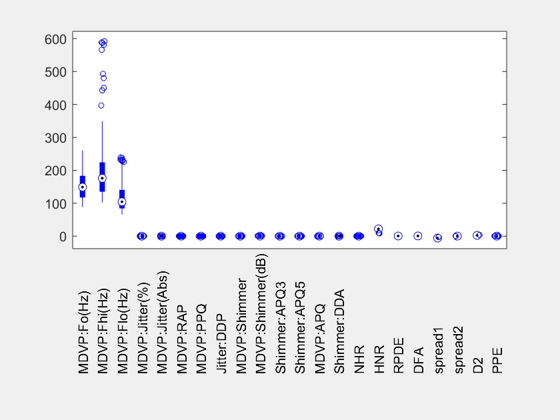

Matlab Implementation
Zhongyuan Lyu
Data management
Import data
First we load the dataset using importdata command. Note that delimiterIn specifies the delimiter (here is comma) and headerlinesIn tells matlab to read numeric data starting from line headerlinesIn+1. Note that for ASCII files, the output data contains a double array with suffix .data , and a cell array with suffix .textdata which includes row and column headers. In original data, column 17 is the status of the subject, which is the labeled as 0-1 in our example for classfication. Thus we extract this column as the response variable and the remaining columns as predictor variables.
delimiterIn = ',';
headerlinesIn = 1;
parkinson_data = importdata('C:\Users\steno\Desktop\STATS506\group project\parkinsons.data',delimiterIn,headerlinesIn);
y = parkinson_data.data(:,17);
x = parkinson_data.data(:,[1:16,18:end]);Divide data into trainning/validation/testing set
We can split the data into trainning data set, validation data set and testing data set using dividerand function in Neural Network Toolbox package, in which N is the number of targets to divide up, *Ratio is the ratio of vectors for trainning/validation/testing. What we get is the indices of each dataset (only the first 20 are shown above). Note that the divide is randomly done, so the function rng(seed) seeds the random number generator for reproductivity of the result.
rng(0)
trainRatio = 0.8;
valRatio = 0;
testRatio = 0.2;
N = length(x);
[trainInd,valInd,testInd] = dividerand(N,trainRatio,valRatio,testRatio);
table(transpose(trainInd(1:20)),transpose(testInd(1:20)),'VariableNames',...
{'TrainIndex','TestIndex'})
ans =
20×2 table
TrainIndex TestIndex
__________ _________
3 1
5 2
6 4
7 9
8 10
11 12
14 13
16 15
17 18
19 20
21 23
22 24
25 36
26 39
27 57
28 65
29 66
30 71
31 73
32 75
Though we mentioned trainning/validation/testing data set, we are going to use K-fold cross validation (a built-in process in modeling) to adjust the hyperparameters as well as assessing the model. So there is no point dividing the orignal dataset in advance in our following analysis.
Boxplot of the data
The code below gives boxplot of all variables using boxplot function (the original data set). The option 'PlotStyle', 'compact' specifies a smaller box style designed for plots with many groups and 'Label', variable_name specifies multiple label variables using variable_name array.
We can see from the boxplot that the variations of all variables differ significantly.
% Boxplot
variable_name = parkinson_data.textdata(1,[2:17,19:end]);
boxplot(x,'PlotStyle','compact','Labels',variable_name);
Note that for simplicity, we treat the whole 195 instances as iid samples (actually not since these instances come from 31 people, but we focus on how to use SVM command in matlab rather than verification of assumptions. Besides, there is also a paper named “Learning from dependent observations” arguing that the Support Vector Machine is also consistent under dependent data).
Data analysis using SVM
The code below fit a SVM model using fitcsvm function. The expression 'ResponseName','Health status' is a Name-Value pair argument specifying a name for the response variable. With a ; at the end of the expression, Matlab would show that SVMmodel is a trained SVM classifier and a property list.
SVMmodel = fitcsvm(x,y,'ResponseName','Health status')
SVMmodel =
ClassificationSVM
ResponseName: 'Health status'
CategoricalPredictors: []
ClassNames: [0 1]
ScoreTransform: 'none'
NumObservations: 195
Alpha: [67×1 double]
Bias: 7.0494
KernelParameters: [1×1 struct]
BoxConstraints: [195×1 double]
ConvergenceInfo: [1×1 struct]
IsSupportVector: [195×1 logical]
Solver: 'SMO'
Display the properties of SVMmodel, for example, to check the prior probabilities for each class, by using dot notation.
SVMmodel.Prior
ans =
0.2462 0.7538
We can change the prior option during training by using the 'Prior' Name-Value pair argument (default is 'empirical').
Similarly, we can get the kernel function used for trainning and its parameters of the model using the properties of SVMmodel. The default kernel function is linear.
SVMmodel.KernelParameters
ans =
struct with fields:
Function: 'linear'
Scale: 1
We can also optimize hyperparameters automatically. The optimization minimizes the cross-validation loss (error) using fitcsvm by varying the parameters. The Name-Value pair argument OptimizeHyperparameters,'auto' optimize parameters 'BoxConstraint' and 'KernelScale'. One can also specify this opition as 'all', which additionally searches for the optimal kernel function, the polynomial order and the bool if the predictor data needs to be standardized. The function rng(seed) seeds the random number generator for reproductivity of the result.
rng(0)
SVMmodel_opt = fitcsvm(x,y,'OptimizeHyperparameters','auto',...
'HyperparameterOptimizationOptions',struct('AcquisitionFunctionName',...
'expected-improvement-plus'))
SVMmodel_opt.KernelParameters
|=====================================================================================================|
| Iter | Eval | Objective | Objective | BestSoFar | BestSoFar | BoxConstrain-| KernelScale |
| | result | | runtime | (observed) | (estim.) | t | |
|=====================================================================================================|
| 1 | Best | 0.42564 | 11.832 | 0.42564 | 0.42564 | 16.395 | 0.16137 |
| 2 | Best | 0.21538 | 0.063426 | 0.21538 | 0.22808 | 2.8436 | 370.9 |
| 3 | Best | 0.14359 | 9.8105 | 0.14359 | 0.15878 | 0.002819 | 0.031454 |
| 4 | Accept | 0.24615 | 0.067791 | 0.14359 | 0.15706 | 0.0010578 | 170.23 |
| 5 | Accept | 0.19487 | 10.34 | 0.14359 | 0.17541 | 0.0027038 | 0.01694 |
| 6 | Accept | 0.17436 | 0.086205 | 0.14359 | 0.17403 | 0.0041109 | 4.2994 |
| 7 | Best | 0.13333 | 11.384 | 0.13333 | 0.14405 | 0.0091891 | 0.038756 |
| 8 | Best | 0.12821 | 5.2341 | 0.12821 | 0.13163 | 0.013984 | 0.2287 |
| 9 | Accept | 0.15897 | 0.47347 | 0.12821 | 0.13149 | 0.038995 | 1.0526 |
| 10 | Accept | 0.12821 | 4.2495 | 0.12821 | 0.12806 | 0.0083681 | 0.20405 |
| 11 | Accept | 0.12821 | 4.628 | 0.12821 | 0.12692 | 0.0081349 | 0.18718 |
| 12 | Accept | 0.13333 | 3.8141 | 0.12821 | 0.12801 | 0.0061456 | 0.18532 |
| 13 | Accept | 0.13333 | 8.9937 | 0.12821 | 0.12787 | 0.016354 | 0.093711 |
| 14 | Accept | 0.24615 | 0.097052 | 0.12821 | 0.12813 | 0.095052 | 968.16 |
| 15 | Accept | 0.13846 | 10.552 | 0.12821 | 0.12813 | 0.0052362 | 0.063495 |
| 16 | Accept | 0.18462 | 0.072766 | 0.12821 | 0.12827 | 994.84 | 967.94 |
| 17 | Accept | 0.16923 | 0.33994 | 0.12821 | 0.12835 | 0.0010454 | 0.24803 |
| 18 | Error | NaN | 12.638 | 0.12821 | 0.12835 | 993.79 | 0.0010077 |
| 19 | Error | NaN | 12.57 | 0.12821 | 0.12835 | 26.818 | 0.0010054 |
| 20 | Accept | 0.46667 | 9.6414 | 0.12821 | 0.12844 | 999.82 | 0.0034329 |
|=====================================================================================================|
| Iter | Eval | Objective | Objective | BestSoFar | BestSoFar | BoxConstrain-| KernelScale |
| | result | | runtime | (observed) | (estim.) | t | |
|=====================================================================================================|
| 21 | Accept | 0.21538 | 11.455 | 0.12821 | 0.12826 | 994.76 | 4.599 |
| 22 | Accept | 0.51282 | 13.165 | 0.12821 | 0.12737 | 1.4362 | 0.0018256 |
| 23 | Accept | 0.17949 | 0.1379 | 0.12821 | 0.1274 | 74.449 | 115.82 |
| 24 | Accept | 0.15897 | 0.3499 | 0.12821 | 0.12906 | 2.228 | 7.3416 |
| 25 | Accept | 0.17949 | 0.09955 | 0.12821 | 0.12896 | 0.18269 | 18.016 |
| 26 | Accept | 0.13333 | 6.5619 | 0.12821 | 0.12793 | 0.0082056 | 0.1003 |
| 27 | Accept | 0.13333 | 8.9014 | 0.12821 | 0.12791 | 982.93 | 28.41 |
| 28 | Accept | 0.12821 | 3.6032 | 0.12821 | 0.1279 | 70.645 | 20.132 |
| 29 | Accept | 0.13333 | 5.546 | 0.12821 | 0.12789 | 276.2 | 20.332 |
| 30 | Accept | 0.15385 | 0.35063 | 0.12821 | 0.12791 | 13.063 | 22.942 |
__________________________________________________________
Optimization completed.
MaxObjectiveEvaluations of 30 reached.
Total function evaluations: 30
Total elapsed time: 198.7913 seconds.
Total objective function evaluation time: 167.057
Best observed feasible point:
BoxConstraint KernelScale
_____________ ___________
0.013984 0.2287
Observed objective function value = 0.12821
Estimated objective function value = 0.12791
Function evaluation time = 5.2341
Best estimated feasible point (according to models):
BoxConstraint KernelScale
_____________ ___________
0.013984 0.2287
Estimated objective function value = 0.12791
Estimated function evaluation time = 4.8165
SVMmodel_opt =
ClassificationSVM
ResponseName: 'Y'
CategoricalPredictors: []
ClassNames: [0 1]
ScoreTransform: 'none'
NumObservations: 195
HyperparameterOptimizationResults: [1×1 BayesianOptimization]
Alpha: [73×1 double]
Bias: 6.9382
KernelParameters: [1×1 struct]
BoxConstraints: [195×1 double]
ConvergenceInfo: [1×1 struct]
IsSupportVector: [195×1 logical]
Solver: 'SMO'
ans =
struct with fields:
Function: 'linear'
Scale: 0.2287


Now we try to train an SVM classifier using the radial basis kernel rather than linear kernal. Let Matlab find a scale value for the kernel function and it is good practice to standardize the predictors.
SVMmodel_rbf = fitcsvm(x,y,'ResponseName','Health status','Standardize',true,'KernelFunction','RBF',...
'KernelScale','auto')
SVMmodel_rbf.KernelParameters
SVMmodel_rbf =
ClassificationSVM
ResponseName: 'Health status'
CategoricalPredictors: []
ClassNames: [0 1]
ScoreTransform: 'none'
NumObservations: 195
Alpha: [107×1 double]
Bias: 0.6224
KernelParameters: [1×1 struct]
Mu: [1×22 double]
Sigma: [1×22 double]
BoxConstraints: [195×1 double]
ConvergenceInfo: [1×1 struct]
IsSupportVector: [195×1 logical]
Solver: 'SMO'
ans =
struct with fields:
Function: 'gaussian'
Scale: 3.0239
Then we cross validate the SVM classifier using the function crossval for the above three models. This option can be found in the methods of trained classifier. By default, the software uses 10-fold cross validation. CVSVMModel_rbf is a ClassificationPartitionedModel cross-validated classifier. And we estimate the out-of-sample misclassification rate using the function kfoldLoss.
CVSVMmodel = crossval(SVMmodel);
classLoss = kfoldLoss(CVSVMmodel)
CVSVMmodel_opt = crossval(SVMmodel_opt);
classLoss_opt = kfoldLoss(SVMmodel_opt)
CVSVMmodel_rbf = crossval(SVMmodel_rbf);
classLoss_rbf = kfoldLoss(SVMmodel_rbf)
classLoss =
0.1385
classLoss_opt =
0.1333
classLoss_rbf =
0.1179
We can see that the rbf kernel perfomance best among these three models with regard to the out-of-sample misclassfication rate.
In addition, we can use predict function to get the label of the given predictor data in the table or matrix X, based on the full or compact, trained SVM classification model. And the [label,score] command returns a matrix of scores (score), indicating the likelihood that a label comes from a particular class. For SVM, likelihood measures are either classification scores (for linear kernel) or class posterior probabilities. For each observation in X, the predicted class label corresponds to the maximum score among all classes.
Now we train an new SVM classifier to demonstrate how to use the command. Specify a 10% holdout sample for testing using the Name-Value pair 'Holdout', 0.1. Note that CVSVMmodel is a ClassificationPartitionedModel classifier. It contains the property Trained, which is a 1-by-1 cell array holding a CompactClassificationSVM classifier that the software trained using the training set. Label the test sample observations. And we display the results for the first 10 observations in the test sample.
CVSVMmodel = fitcsvm(x,y,'Holdout',0.1,'ResponseName','Health status','Standardize',true);
CompactSVMmodel = CVSVMmodel.Trained{1}; % Extract trained, compact classifier
testInds = test(CVSVMmodel.Partition); % Extract the test indices
xtest = x(testInds,:);
ytest = y(testInds,:);
[label,score] = predict(CompactSVMmodel,xtest);
table(ytest(1:10),label(1:10),score(1:10,2),'VariableNames',...
{'TrueLabel','PredictedLabel','Score'})
ans =
10×3 table
TrueLabel PredictedLabel Score
_________ ______________ _______
1 1 3.5166
1 1 3.5111
1 1 1.3408
0 1 0.53163
1 1 3.254
1 1 2.8036
1 1 2.1676
1 1 1.3128
1 1 3.7792
1 1 2.2678